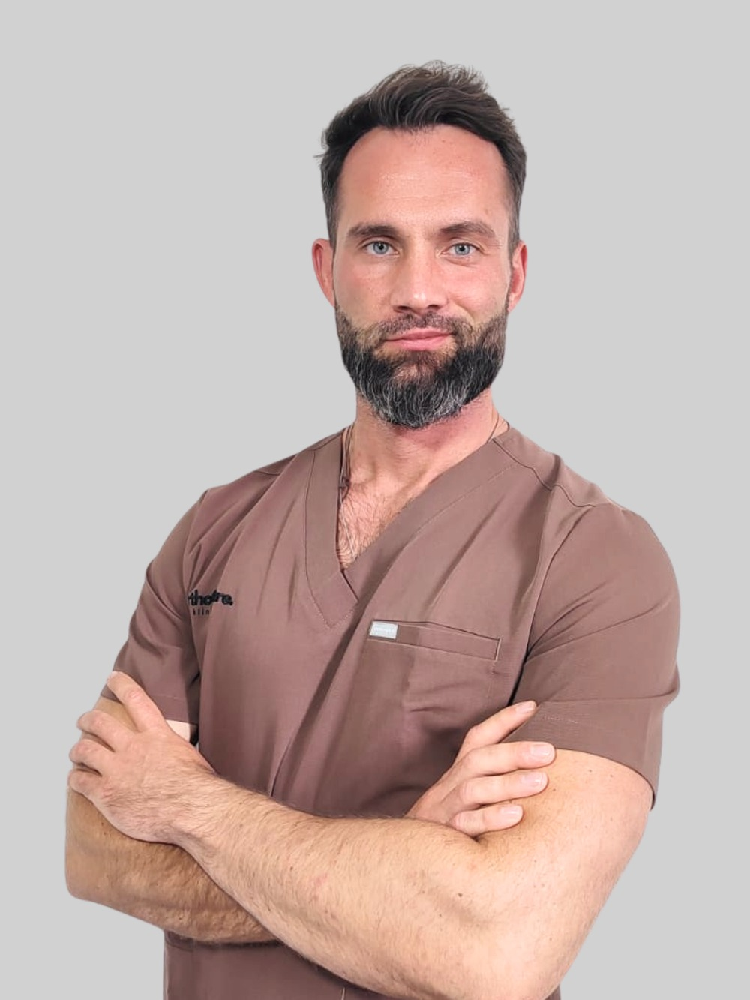

lek. Bartosz Dominik
Specjalista ortopedii i traumatologii narządu ruchu
Lek. Bartosz Dominik to doświadczony ortopeda specjalizujący się w leczeniu schorzeń barku i kolana. Jest absolwentem Warszawskiego Uniwersytetu Medycznego. Od 2012 roku związany z Carolina Medical Center w Warszawie. W latach 2018–2021 współpracował z MIRAI Clinic w Warszawie i Otwocku.
W 2019 roku odbył sześciomiesięczny staż naukowy w renomowanej klinice Gelenkpunkt Privatklinik Hochrum w Innsbrucku, prowadzonej przez prof. Christiana Finka, gdzie zdobywał doświadczenie w artroskopii oraz endoprotezoplastyce barku i kolana. Jest instruktorem kursów kadawerowych oraz prowadzi szkolenia dla lekarzy z zakresu chirurgii stawu ramiennego i kolanowego.
W swojej pracy koncentruje się na leczeniu uszkodzeń stożka rotatorów, niestabilności stawu barkowego oraz zmian zwyrodnieniowych. Członek PTOiTr, PTBiŁ, PTArtro oraz AGA – niemieckojęzycznego towarzystwa chirurgii stawów. Ceniony za nowoczesne podejście, precyzję i dobry kontakt z pacjentem.
